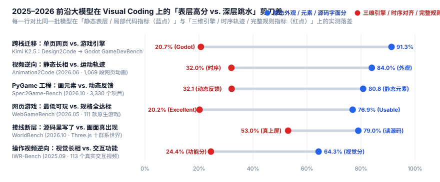
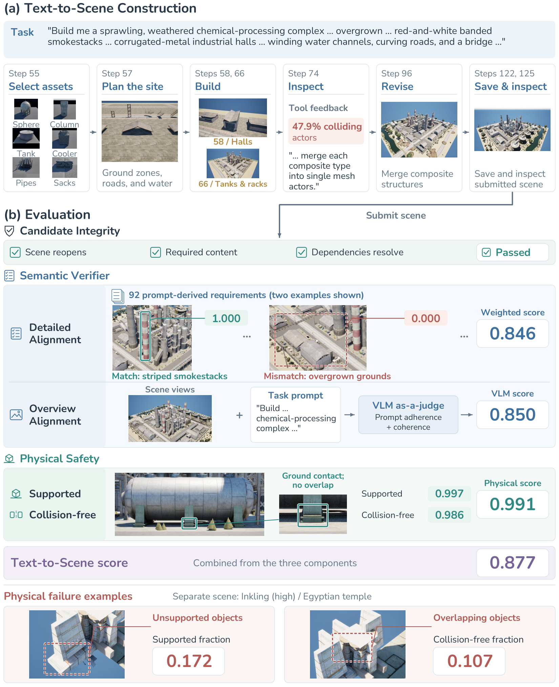
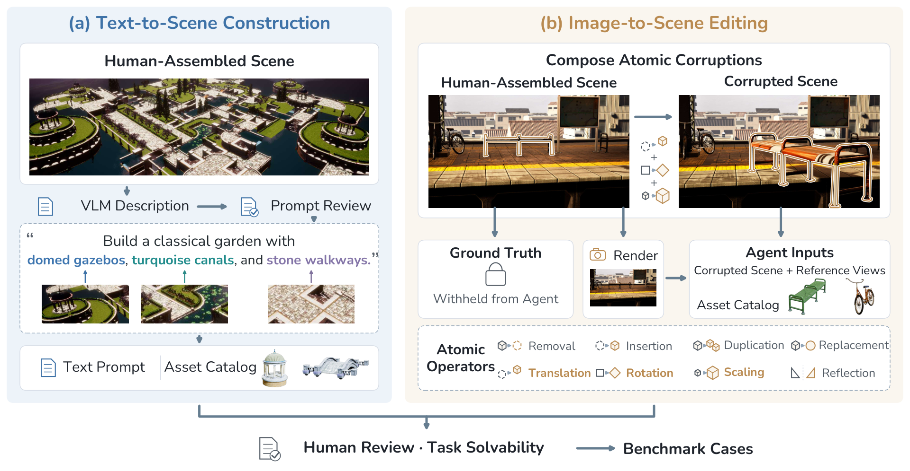
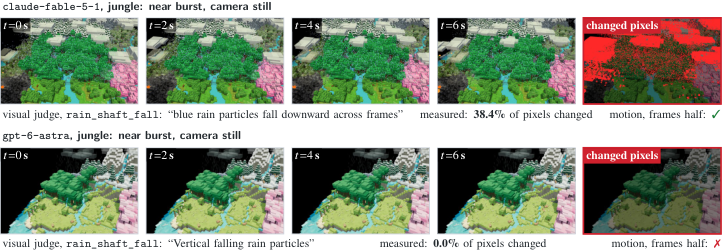
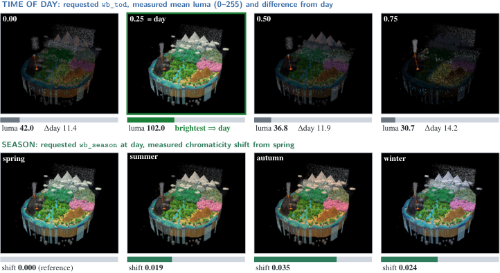
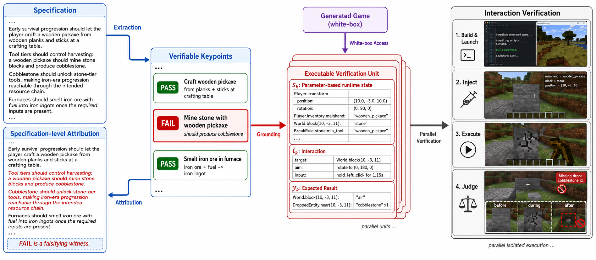

TL;DR：我们正处在代码智能的中场时刻。在终端与纯文本仓库里，「大规模代码预训练先验 + 语言推理动作 + 单元测试可验证奖励（RLVR）」的通用配方已经跑通。但当代码走出终端、开始驱动三维渲染管线与游戏物理循环时，这套配方的三个支点同时失效了：预训练语料里没有三维光栅化的视觉后果，运行环境里最致命的渲染与挂载错误从不报错崩溃，而评测端失去了免费且唯一的字符串标准答案。本文面向没有计算机图形学背景的 AI 研究者与 Benchmark 制作者，把 2018–2026 年间 62 篇论文与 10 篇技术博客压缩成一条清晰的逻辑线：先用两个交互沙盘建立渲染与验证的直观直觉，再回答模型到底卡在哪四道能力断层、背后是什么训练根源，最后讨论该如何设计不翻车的题目与验证器，以及这对构建开源游戏模组基准
ModBench意味着什么。
一、 为什么纯文本代码的「通用配方」走出终端就失灵了？
如果回顾过去两年代码大模型与 Coding Agent 的突飞猛进——从刷爆 HumanEval (2021.07)、拿下 IOI 金牌，到在 SWE-bench (2023.10) 上自动修补复杂的开源仓库 Issue——背后其实是一套高度统一的成功配方。借用姚顺雨在《The Second Half》(2025.04) 中的拆解，强化学习之所以终于在代码与推理上实现泛化，是因为三个核心要素恰好咬合在了一起：强大的预训练先验（Priors）、以语言推理为动作空间的环境（Environment），以及快速且零歧义的自动验证器（Verifier）。
在传统软件工程基准里，这三件事几乎是免费送给研究者的。GitHub 上数十亿行源码把一维符号逻辑烙进了预训练先验；当模型写错代码时，解释器会在 0.1 秒内抛出带精确行号的文本报错栈（Traceback），模型可以用它最擅长的自然语言推理去读报错、定位并改代码；而最终评判对错只需要跑一遍现成的单元测试 assert f(x) == y*。只要任务还留在这个闭环里，不断扩大算力就能稳步推高分数。
那么，当我们让模型去做 Visual & Interactive Coding——比如从设计稿生成前端应用、写 SVG 矢量动画、用 Blender 或 Three.js 搭建三维场景，或者在 Godot、Unreal 与 Minecraft 里开发可玩的游戏与模组时——发生了什么变化？
表面上看，模型的输出依然是代码；但本质上，代码的评价终点从「符号返回值」变成了「渲染管线与物理循环在时间轴上产出的画面帧与交互状态」。就在这一步跨越中，支撑纯文本代码配方的三个隐含前提同时崩塌了：
第一，答案不再唯一。写一个排序函数，输出数组是唯一确定的；但写一个「箱盖能绕铰链掀起的木宝箱」或「双滚筒矿石破碎机」，一千个程序员会写出一千套完全不同的类名、DOM 树层级与三维网格顶点。写死变量名的单元测试会误杀好代码，而直接拿参考截图做逐像素相减（MAE == 0），也会把换了合法配色或自建网格的正确作品全部判成零分。
第二，编译通过不再代表任何事情。在算法题里，代码不抛异常跑完边界输入，逻辑多半已经对了八成。但在图形与游戏工程里，最致命的错误几乎全是「静默」的：代码 100% 编译通过、控制台零报错退出，渲染到屏幕上却是两个零件相互切入穿模、正面墙壁变成单向透明的隐形洞，或者核心类写得工工整整却根本没挂载进渲染主循环。
第三，视觉裁判极易被表面假象欺骗。既然单元测试太死板，很多人自然想到：直接截几张图交给多模态大模型（VLM-as-a-Judge）打分不就行了？遗憾的是，模型很快就学会了用一张精致的静态背景图或不会动的漂亮外壳，从视觉裁判手里骗走高分，哪怕底下连最基本的碰撞和能量守恒都没写。
看懂了这三重断裂，过去三年间六十多篇 Visual Coding 论文的演进就不再是一堆零散的缩写词条，而是一个非常自然的探索过程：我们究竟该如何测量一段「画在屏幕上、动在时间里」的代码？
二、 Preliminary：零图形学基础的两个直觉支点
很多做大模型和 RL 的研究者一听到「三维坐标系、光栅化、法线、光流」就容易产生隔阂，觉得那是图形学专家的领地。其实站在造题与训练模型的视角，你完全不需要推导渲染方程，只需要透过两个直观沙盘看清两件事：一维代码在变成画面的路上最容易踩中哪五个坑，以及评测界目前手头究竟有哪六把测量的尺子。
2.1 从代码到画面：为什么语法全对的程序会画出荒谬的空间结构？
写二维网页时，模型其实占了一个巨大的便宜：浏览器的排版引擎（Flexbox / Grid）会自动替它算好每个盒子的宽高并流式换行，哪怕模型对像素坐标毫无概念，文字和按钮也很少叠成一团。但一旦跨入 SVG 矢量图、Three.js、Blender 或游戏三维世界，这层「自动防撞护栏」就撤掉了——每个部件摆在哪、绕哪根轴转、哪一面朝外，全靠代码里的数字硬算。
请直接在下方沙盘中点击六个切换按钮，对比左侧实时渲染的三维宝箱与右侧触发故障的三行代码：
这五个画面几乎囊括了当前大模型在三维编码中 80% 以上的失败现场，它们背后的物理原因非常朴素：
- 谁朝天空没有统一标准（Y-up vs. Z-up）：WebGL 与 Three.js 默认
+Y轴朝上，而 Blender、Unreal 与多数 CAD 工具默认+Z轴朝上。模型把两类语料混在一起学完后，经常直接把Z-up资产塞进Y-up场景而漏写绕 X 轴 \(90^\circ\) 的校准，物体当场翻倒趴在地上。 - 旋转前忘了移枢轴（Pivot），平移与旋转顺序不可颠倒：代码新建一个立方体时，默认原点在它肚子正中心 \((0,0,0)\)。想让箱盖像真实合页一样绕后边缘掀起，必须先把网格平移使后边缘对齐原点，再执行旋转（矩阵乘法 \(\mathbf{T}\cdot\mathbf{R} \neq \mathbf{R}\cdot\mathbf{T}\)）；如果直接在中心调
rotation.x，箱盖就会悬在半空原地自转，后半截直接切进箱体木板里（穿模）。 - 三角形顶点写反两个下标，墙壁就会隐形（背面剔除）：GPU 为了省一半算力，默认只画「外表面朝向摄像机」的三角面，而判断正反全看三个顶点在屏幕上是逆时针还是顺时针排列。模型生成网格数组时只要把
[0, 1, 2]顺手写成[0, 2, 1]，法线就翻转 \(180^\circ\) 朝向箱子内部，正对玩家的墙壁立刻变成单向透明的空洞。 - 代码数字写得越整洁，画面越可能剧烈闪烁（Z-fighting）：代码预训练语料让模型偏爱整洁的整数坐标——于是它把地板放在
y = 0.0，又把地毯贴花也放在y = 0.0。两张面片到镜头的浮点距离完全相等，GPU 深度缓冲（Z-buffer）在相邻像素间随机交替判定谁遮挡谁，镜头微动就会爆出刺眼的锯齿闪烁。
2.2 六把测量的尺子：当前 Benchmark 是怎么设置 Verifier 的？
既然编译器对上述五类错误全部放行，评测者就必须在运行期接管画面或内存。如果把所有论文里的自动判分器拆开看，不管包装成什么新名字，底层其实都在组合使用以下 六种标准 Verifier 设置方案。你可以在下方沙盘左侧点选不同方案，并在右上角切换三种典型提交（标准正确解、合法换造型解、投机假实现），观察每把尺子的真实脾气：
把这六种方案放在一起对比，你会发现它们其实沿着「对创意自由度的包容性」与「防模型钻空子的确定性」分成了三代：
第一代尺子是拿标准参考答案硬比对（方案 1 逐像素差、方案 2 DOM 视觉块匹配与三维点云配准）。如果题目本身就要求唯一外观——比如修补前端图表 2 像素错位的回归测试，或者按工程图纸复刻唯一形状的机械零件——这套方法既快又准。在三维建模基准（如 CADPrompt (2024.10) 与 CAD-Coder (2025.05)）中，为了消除整体摆放位置的微小偏移，评测器会在生成网格与标准网格表面各均匀采样上万个三维点 \(P\) 与 \(Q\)，先运行迭代最近点算法（ICP）自动对齐旋转平移，再计算双向最近邻均方距离即倒角距离（Chamfer Distance）：
但第一代尺子的局限是根本性的：现实中有价值的视觉与游戏任务大多没有唯一外观真值。一旦允许模型自由设计宝箱样式或网页排版，拿单一参考网格去算像素差或倒角距离，就会把合法的好设计错判成零分。
于是第二代尺子彻底放弃了「比长相」，转向直接测量引擎内存结构与屏幕物理规律（方案 3 场景图探针、方案 4 时钟与光流测量）。既然不管宝箱长什么样都不能悬空、穿模或漏背面，那就先通过交卷清单（manifest）或轻量映射器把「箱体」「箱盖」绑定到内存里的三维网格节点，直接用几何程序算包围盒间隙与射线法线方向；既然不管雨林画成什么风格，「下雨」像素就必须往下动、「入夜」画面就必须变暗，那就在无头浏览器里固定机位连拍，直接测整帧亮度差（Luma）、变化像素占比 \(f_i\) 以及相邻帧像素运动的速度场即稠密光流（Optical Flow）。
但纯物理测量也有盲区：它测得出两个圆柱体在反向旋转，却认不出这台机器画得像不像一台破碎机；而且对于流程长达半小时的游戏，怎么触发深层状态也是个大问题。这催生了第三代尺子：受控盲测视觉问答（方案 5）与白盒运行期状态注入（方案 6）。前者通过隐去画面自带的文字标签、随机洗牌多次提问二值结构题（CodeVQA）压制了视觉大模型的幻觉；后者则打破了「测游戏就得派个 AI 从第一关打到尾」的思维定势——既然评测端手里就有候选源码和存档结构，直接把游戏内存修补到待测前置状态 \(s_k\)（比如满电超载前夕），只跑 3 秒钟短操作测结果，彻底解开了复杂游戏的验证死结。
三、 上半场的幻觉：为什么二维网页刷爆了，三维与游戏却全线跳水？
有了第二节的坐标系，我们就能看清过去三年整个领域发生了什么。
2024 年初，当多模态大模型刚刚具备不错的看图能力时，最自然的想法就是把「看截图写单页网页」或「看论文图写绘图脚本」做成基准——于是有了 Design2Code (2024.03)、WebCode2M (2024.04)、ChartMimic (2024.06) 和 SVG-Bench (2024.12)。起初开源模型在这些基准上表现平平，但很快，各大实验室用上半场最擅长的办法解决了它：往预训练和中期训练（Mid-training）里灌入数以亿计的合成与真实 (HTML/CSS, 网页截图) 配对数据。到了 2026 年初，像经过 15 万亿图文混合 Token 训练的 Kimi K2.5 (2026.01)，在 Design2Code 上的得分已经冲到了 91.3%。
如果只看这类榜单，人们很容易得出乐观的推论：视觉编码已经被通用配方攻克了，接下来无非是把单页网页扩成多页网站、把二维扩成三维。
然而，当研究者和一线开发者真的把模型推进三维空间、连续视频动画和真实游戏引擎时，看到的却是一幅截然不同的图景。下图汇总了 2025 至 2026 年六项代表性评测的核心对比：同一批前沿模型，在静态外观、孤立元素建模或源码字面检查（蓝点）上普遍高达 64%～91%；可一旦测量标准切换到真实游戏引擎开发、连续时序运动、动态交互反馈或完整规则达标率（红点），成绩无一例外地跳水到 20%～53%。

为什么会出现如此整齐划一的断层？把社区里讨论最热烈的十篇一线博客与最新实验证据拼在一起，我们可以看清挡在模型面前的四堵墙，以及它们背后共同的训练根源。
3.1 第一堵墙：离开浏览器排版引擎后，空间连接与三维几何集体失明
最早察觉到「高分幻觉」的是独立开发者。Simon Willison 从 [2024-10] 开始用一个极简题目测试所有新发布的大模型：不给参考图，直接写一段画「骑自行车的鹈鹕」的 SVG 代码（Pelicans on a bicycle）。Joe Faith (2025) 与 Sichi Chen 在 [2026-10] 的 Folkbench 审计长文 中点破了这道题的精妙之处：没有 CSS 盒模型帮忙排版后，SVG 强迫模型显式拆解零件并算出它们的机械连接关系。模型往往能在代码注释里头头是道地标出车把、车架与脚踏板，但画出来的车把悬在半空不连车架，双脚漂浮在踏板上方；更让人意外的是，Robert Glaser 与 Simon Willison 在 [2025-11]（Agentic Pelican）尝试让视觉模型「看一眼自己渲染出的图再重写」，连续迭代四轮后发现，空间构图在第一轮生成时就已经锁死了——模型只会顺着错掉的车架添羽毛、改渐变色，几乎不会推翻重设底层几何坐标。
一旦进入三维世界，这种空间失明就变成了灾难。开发者 0x0ndra 在 [2025-11] 撰写的实战笔记 Vibecoding Three.js: when AI hit the wall of 3D 中写道：模型五秒钟就能搭好场景、相机和动画循环的样板工程，但只要一句「让所有面板绕中心弧形排开并面向观众」，它就会在坐标系朝向、四元数乘序和无法打印日志调试的 GLSL 着色器里彻底迷失，极其自信地交付一堆背对镜头的面板。十个月后，Instaplay 团队基于四万多款小游戏的线上故障构建了 3JSBench (2026.09)，对 13 个前沿模型的 3,000 次生成做三维场景树体检，结果与 2.1 节沙盘严丝合缝：最高频死因正是部件相互穿模（20%）、法线反穿导致正面透明漏面（19%）、共面深度竞争闪烁（17%）、朝向错误（16%）与悬空断连（16%）（下图 2 右下角展示了 Code4Scene (2026.09) 在 Unreal Engine 5 中抓拍到的同款大面积悬空与穿模实况）。

47.9% 的物体发生碰撞穿模，必须靠引擎碰撞探针回传坐标才能修正；右下角展示了无工具兜底时最典型的两类废片——大量建筑方块悬在半空（左，支撑合格率仅 0.172）以及建筑网格相互切入重叠（右，无碰撞率仅 0.107）。3.2 第二堵墙：静态单帧画得再像，也推不出时间连续性与状态机规则
第二重幻觉发生在从「静态画面」走向「动态交互」的时刻。Andrej Karpathy 在 [2026] 复盘大模型生成《指环王》Three.js 动态世界的实验时一针见血地指出（深度复盘）：模型写几千行三维代码毫不费力，但它没法像人一样流畅地看视频或亲自进场试玩自己造的东西；它只能极其笨拙地挑一个时间点截一张静态图，再去猜两帧之间发生了什么，结果留下了满屏的帧间瞬移、动画抽搐与交互卡顿。
回头看图 1 里的数字，这种「静态强、动态弱」的分裂触目惊心：在包含上千段网页动画视频的 Animation2Code (2026.06) 中，模型生成代码的可执行率超过 97%、静态外观相似度高达 0.84，但衡量运动轨迹还原度的时序相似度最高只有 0.32；在根据操作视频重建交互网页的 IWR-Bench (2025.09) 上，视觉还原分 64.3%，交互功能分只有 24.4%；而在评估三千多个 PyGame 项目的 Spec2Game-Bench (2026.10) 与浏览器游戏基准 WebGameBench (2026.05) 里，模型画静态游戏元素能拿 80.8 分、凑出最低限度能玩的流程能到 76.9%，一旦严查核心规则机制（45.7 分）、胜负终局逻辑（44.1 分）、动态反馈（32.1 分）和完整规格达标率（仅 20.2%），分数立刻腰斩过半。
3.3 第三与第四堵墙：「写了却没上屏」的死代码，与多资产真实引擎的水土不服
更隐蔽的问题出在软件工程规模放大之后。开发者 Yohsuke 在 [2026] 让 11 个 AI Agent 协作开发一款浏览器游戏，三天后他在复盘文章 Most Bugs Were "Written but Not Running" 中写下了一个令所有做代码评测的人警醒的结论：查出来的十几个严重 Bug 里，没有一个是漏写算法——代码全都在文件里写好了，构建零警告通过，运行时也没有任何报错，但这些函数根本没有被挂载到渲染主循环或活动场景树上，屏幕上什么都没发生。Krish Bakshi 在 WorldBench (2026.10) 中定量验证了这个现象：对五个顶级模型生成的 Three.js 世界逐项核对 365 条需求时，读源码裁判判过的比例高达 79%，实机画面真正拍到的比例却只有 53%；两者冲突的 115 项里，有 105 项都是躺在文件里从未上屏的死代码。
而当我们把在单文件网页上风光无限的模型放进真正的游戏引擎仓库时，最后一层面纱也被揭开了。前面提到 Kimi K2.5 在网页前端 Design2Code 上拿到了 91.3%；但 CMU 团队将它放进包含 333 道 Godot 4 真实开发任务的 GameDevBench (2026.05) 后，它的解决率直接跌到了 20.7%（即便全场最强的闭源 Agent 配齐截图与录屏反馈也仅解出 53.8%）。为什么？因为真实游戏工程不是写一个自包含的 index.html：模型必须同时读懂整张未切分的角色精灵表（结果经常把第 1 行的走路帧误绑成第 3 行的挥剑攻击帧，导致 2D 动画与 UI 类任务通过率仅 32%～33%），还要在跨文件的节点树与信号槽之间准确接线。雪上加霜的是，在已有复杂关卡里做局部修改时，模型极度缺乏边界感——Code4Scene 在 Unreal 关卡修复任务上测得最高 Repair F1 仅为 0.527，35.8% 修好目标物体的提交顺手改坏了周围原本正常的场景资产。
3.4 透过「先验—环境—奖励」看本质：模型为什么没学会这些事？
如果我们跳出单篇论文的现象，顺着第一节的 RL 三要素去追问：为什么能拿 IMO 金牌、能修复杂后端 Bug 的模型，偏偏学不会「别穿模、别把墙画反、把运动时序对齐、把写好的函数连上屏幕」？ 原因并不神秘，恰恰是因为这三件事在现有的训练管线里同时处于盲区：
第一，中期训练（Mid-training）的跨模态先验是高度偏科的。模型吃过海量的 (HTML, 2D 网页截图) 和静态图文对，所以内化了二维流式排版与单帧物体长相；但公开互联网上几乎不存在「修改一行四元数旋转顺序或调换两个顶点下标 → 三维深度/法线渲染发生穿模或漏面」的交错轨迹，静态视觉编码器也缺乏对跨帧速度、加速度与动作相位差的细粒度表征。在一维代码 Token 分布里，[0, 1, 2] 和 [0, 2, 1] 语法概率几乎一样，y = 0.0 甚至比防闪烁的 y = 0.004 更符合人类代码的整洁习惯——模型顺着文本先验最自然写出来的代码，在三维光栅化物理里恰好就是错的。
第二，后训练强化学习（RLVR）遭遇了严重的「奖励失明」。现有代码 RL 依赖编译器退出码和单元测试给奖励，可上面所有的三维穿模、背面透明、深度闪烁和未挂载死代码在运行时全部零报错退出，在纯代码执行奖励下不仅不会受罚，反而会作为通过编译的正样本被强化。那换用视觉相似度（比如 CLIP / SigLIP2 余弦分或单张正面截图 VLM 打分）当 RL 奖励行不行？3JSBench 与 WebUIProof (2026.10) 的 VisRL 消融实验证明也不行：全局视觉池化特征对局部 5% 的穿模几乎毫无反应，单张静态帧根本拍不到随时间跳变的闪烁，而只优化截图美观度只会把策略推向「画一个漂亮但点不动的静态假壳」。
第三，函数级刷题惯性破坏了全局接线与背景不变性。长期在独立函数补全和孤立单测上训练，让模型养成了「写完核心计算函数就交卷」的局部习惯，缺少跨文件检查全局场景树挂载（Wiring）的闭环意识；同时，生成式训练往往只奖励「目标物体出现了（Recall）」，却很少惩罚「把周围没让你动的东西改坏了（Non-interference）」，这才导致局部编辑时出现超过三分之一的连带破坏。
四、 重新思考评测假设：怎么把原始资产切成公平且可验证的题目？
在《The Second Half》里有一句很扎心的话：做评测最难的不是把题目出得更难，而是质疑那些我们习以为常、误以为是自然定律的评测默认假设。
当我们手头拿到一批高质量的原始资产——无论是 SVG 与 GLSL 着色器脚本、React 前端工程、带 .blend 源文件的三维模型、Three.js 实时物理场景，还是像 Godot、Unreal 与 Minecraft 那样包含场景树、逻辑脚本、精灵表与存档层的复合游戏仓库——想要把它们变成既能客观排名、又能提供干净 RL 奖励的 Benchmark，就必须打破以下三个根深蒂固的惯性假设。
4.1 打破惯性一：「造题就是给段描述，让模型从零生成一个完整作品」
几乎所有早期基准都默认采用「从零构建（From-Scratch）」模式：把原资产的代码删光，只留一张目标渲染图或一份需求文档让模型重头写。这种出题方式最符合直觉，但作为造题者你会立刻撞上两个工程代价：一是单题运行周期极长（动辄几十分钟），二是模型自由起类名、自由建网格后，下游自动判分器的编写难度呈指数级上升——你必须额外设计一套语义对齐契约（比如让模型交卷时填写角色映射表 manifest，或像 3JSBench 那样专门训练一个轻量部件绑定器把题面名词映射到内存 Mesh 节点）。
回顾 2025 至 2026 年最成功的几个硬核工程基准，它们之所以能快速构建出数百道 100% 全自动确定性判分 的题目，正是因为跳出了「只能从零造整包」的执念，在五类原始资产上发展出了另外两条高信噪比切题路径（表 1 与图 3）：
| 原始资产形态 | 磁盘与内存中的核心组织结构 | 从零构建之外的高效切题方式 | 代表基准（附发布期） |
|---|---|---|---|
| 纯符号矢量与着色器 | 单文件纯文本，靠数学公式与坐标字面量直接算出像素或路径。 | 挖掉核心距离场/光照子函数体，保留函数签名与前置上下文，多组输入下做渲染帧语义克隆比对。 | ShaderMatch (2025.05)、SVGenius (2025.06)、VCode (2025.11) |
| 声明式前端与版式树 | 组件树源码 + CSS + 媒体资源，浏览器自动维护 DOM 与包围盒。 | 给不完美中间态做多轮组件修复，或给用户操作视频配静态素材包重建交互状态。 | DesignBench (2025.06)、VISTA (2026.08)、IWR-Bench (2025.09) |
| Blender 与参数化 CAD | .blend 底座（固化相机/灯光/形态键槽位）+ bpy/CadQuery 程序脚本。 | 在目标脚本 goal.py 上单向扰动材质连线、隐藏光源或几何参数生成 start.py，对照渲染图做差分修复。 | CADPrompt (2024.10)、BlenderGym (2025.02)、BlenderBench (2026.01) |
| Three.js 实时三维世界 | 运行期在浏览器内存中动态装配 THREE.Scene 树并挂接物理循环。 | 给明确部件装配简报直测场景树几何，或在交互物理场景上由 Agent 遍历合成 3,000 条可执行断言。 | 3JSBench (2026.09)、WorldBench (2026.10)、WebUIProof (2026.10) |
| 游戏引擎多模态复合仓 | 场景树（.tscn/.umap）+ 状态脚本 + 未切分精灵表/.obj/音效 + 存档。 | ① 顺着教程挖空子节点与信号；② 向黄金关卡注入原子破坏或 20+ 可逆缺陷；③ 1 母题派生 9 个规则变体。 | GameDevBench (2026.05)、Code4Scene (2026.09)、Spec2Game (2026.10)、GameXpert-Bench (2026) |
看一眼下图 3 中 Code4Scene 的双路径对比就能明白其中的巧思：在下半部分的「精确可验证修复」中，造题者把人类艺术家搭好的完好关卡留作评测端隐藏真值，只用程序向副本施加删除、复制、替换、平移、旋转等八种原子破坏。这样一来，不仅完全免去了手写复杂语义裁判的痛苦，还能直接拿修复后的场景跟隐藏真值做精确对比，同时算出目标修好率（Recall）与周围背景零误伤率（Precision）。同理，Spec2Game-Bench 在同一套昂贵的 PyGame 评测底座上为每个游戏派生「1 个标准题 + 9 个改规则/改参数的受控变体」，零额外夹具成本就戳破了预训练背板泡沫。

无论采用哪种切法，造题冻结前都必须加一道 GameDevBench 式的「题面—测试双向对齐审计」。他们在人工复查自动生成的题目时发现，整整一半的初稿都犯了同一个毛病：测试脚本里写死了字符串零填充格式或特定节点名，公开题面里却根本没提。解决办法简单而有效：派一个独立的审计 Agent 把公开题面和测试源码逐条比对，凡是在题面里找不到无歧义明文依据的 assert，一律禁止上线。
4.2 打破惯性二：「没有唯一标准答案时，让大模型读代码或看截图打分就够了」
当题目确实需要评估开放式的视觉表现时，很多造题者会偷懒选一条单通道捷径：要么让 LLM 读源码打分，要么截两张图让 VLM 打印象分。
前面 3.3 节已经看到，只读源码会被「写了却没挂载上屏的死代码」骗走 4/5 的分数；那只看截图呢？下图 4 展示了 WorldBench 抓到的经典反例：左下角的世界里雨林完全静止（固定机位连拍实测 0.0% 像素变化），视觉大模型看着树叶和雾气却言之凿凿地判定「有垂直下落的雨滴粒子」；而面对右图四季切换带来的真实色度偏移（秋季偏移达 0.035），视觉大模型又粗糙地漏判为「四张画面完全一样」。再加上 BlenderGym (2025.02) 在近八千次人类对比中测出单次 VLM 对齐率最高只有 0.66 且自带强烈的选项顺序偏见，单通道大模型裁判在严肃评测中是不可接受的。


0.0%，一票否决了 VLM 凭静态氛围脑补出的「下雨」幻觉；右图：通过外部时钟补丁直接测量昼夜亮度（Luma）与四季色度偏移，纠正了 VLM 对细微连续色彩变化的失明。真正稳健的做法是遵循 「物理与几何归程序硬测，高层语义归去标签盲测问答，且源码与画面双通道互证」：凡是能算的——穿模体积、悬空间隙、背面法线、昼夜亮度、帧间变化像素比 \(f_i\) 与光流方向——100% 交给数学探针；只有「画得像不像某个部件」交给剥离了全部 UI 文字标签（防看字猜图）、经随机洗牌多次采样的二值客观问答（如 ArtifactsBench (2025.07) 的三阶段清单与 VCode 的 CodeVQA）。计分时采用双通道交叉约束：设引擎内部状态/有效代码核验为 \(c_i \in \{0,1\}\)，受控画面核验为 \(v_i \in \{0,1\}\)，实测像素运动门控为 \(m_i \in \{0,1\}\)，动态条目按 \(g_i = p_i(\frac{1}{2}c_i + \frac{1}{2}v_i \cdot m_i)\) 结算——死代码没上屏最多拿一半分，贴静态假图没物理状态或像素没动则运动分直接清零。
4.3 打破惯性三：「要测交互游戏，就得派个 AI 从出生点一路玩通关」
最后一个常见惯性来自 Web 自动化评测：既然测网页可以用 Playwright 派个 GUI Agent 去点按钮（如 WebGen-Bench (2025.05) 与 Vision2Web (2026.04)），那测生成的游戏也派个试玩 Agent（Agent-as-a-Verifier）从头玩一遍不就好了？
在三步就能点完的网页表单里这没问题，但在状态空间随时间指数级分叉的游戏里，这会把验证拖入泥潭——如果试玩 Agent 自己操作笨拙死在了第一关，后面写得再好的合成台、满电超载保护或 Boss 战机制就永远测不到了。GameGen-Verifier (2026.05) 在 100 款游戏上实测发现，哪怕套上强制覆盖清单，开放试玩代理与人类专家判断的一致率也只有 58.8%。
他们的破局思路非常干净（下图 5）：评测不是打通关比赛，没必要从零走到待测状态。既然评测端握有模型生成的白盒源码或存档结构，完全可以把需求拆成一组局部的霍尔逻辑单元 \(\{P_k\}\ \mathbf{a}_k\ \{Q_k\}\)（前置条件、短操作、预期结果），直接用脚本把游戏内存或存档修补到前置状态 \(s_k\)（比如直接把玩家刷在石头前、手里塞把木镐），只执行 1.15 秒按住左键的操作，立刻检查有没有掉落圆石。仅仅把「长路径试玩探索」改写成「白盒运行期状态注入」，人类一致率就从 58.8% 跃升至 92.2%，评估耗时缩短了 16.6×，而且每个独立的 3 秒测试单元天然就能并行跑，直接解决了强化学习最头疼的采样吞吐瓶颈。

五、 下半场的实战推演：这对我们构建 ModBench 有什么真正启发？
把上面所有的线索收拢回来，现在我们可以非常清醒地审视手头正在建设的开源游戏模组基准 ModBench（game-mod-bench / doc2mod，底层拥有覆盖 Minecraft、Luanti、GZDoom、CDDA 等 13 款游戏的 130 个真实开源 Mod 母库，目前已做出 8 道全自动中小题和 7 道复杂系统大题）。
如果用下半场的标准来衡量，ModBench 之所以极具稀缺价值，恰恰因为它从一开始就拒绝了单文件网页玩具，直接踩在了学术界最缺的三个真实工程维度上：一是在数万至二十万行级真实引擎里要求代码、.blend/.obj 三维网格、.png 贴图与音频跨模态自洽；二是物理权限隔离配合低权限账号 UID 65534 从纯源码与原始美术源净室重编，配以 task-manifest.json 语义槽位释放命名自由度；三是真杀进程（kill -9）的双容器冷重启读档测试（比如两台处在不同下压深度的冲压机断电存盘、新进程恢复供电后必须按原进度先后产出且物料守恒）。这三点领先于目前几乎所有公开基准，绝不能为了图省事而降级。
但与此同时，ModBench 目前遇到的三大现实卡点——第二批 7 道大题里有 6 道卡在 native_review_required 没法全自动出分、Agent 在 1 小时预算内几乎不调 Blender 纯靠盲猜三维坐标、以及单局 60～180 分钟全量编译试错太重难以接入高频 RL 训练——如果放在刚刚梳理完的文献坐标系里看，其实是因为我们在不知不觉中背上了两个完全可以卸掉的「旧假设包袱」。卸掉它们，就能直接打开下面这套双轨升级蓝图（图 6）：
5.1 启发一：把 task-manifest 往下延伸半步到「活动子部件槽位」，彻底解开 6 道大题的自动视觉验收
为什么像 Immersive Engineering 38 块破碎机（双滚筒反向旋转）、Create 齿轮应力传动或 Doom 逐发装填霰弹枪这 6 道大题会卡在半自动复核上？因为我们之前默认了一个过于严苛的黑盒假设：只让模型在 task-manifest.json 里声明整台机器的方块 ID（如 crusher），至于机器内部的机身和左右两个滚筒是怎么建的，评测器完全不问，只试图从外面的游戏摄像机截视频看固定像素框（ROI）动没动——结果模型自建的滚筒位置稍微偏半格就出框，破碎机喷出的矿石粒子火花还会干扰像素帧差，但如果退回去像早期活塞题那样卡死 MAE ≤ 3 像素重合，又会把合法自建的 Blender 模型全部误杀。
参照 3JSBench 的部件映射与 WorldBench 的双通道门控，破局其实只需要把契约往下延伸半步：不限制模型怎么自由建模，但在公开契约 task-manifest.json 里要求显式声明可动子部件的网格或动画状态槽位（例如破碎机声明 chassis_mesh、drum_left_mesh、drum_right_mesh 三个导出 .obj 部件槽位，霰弹枪声明待机、单发塞弹与开火打断的状态名）。仅仅加上这几个公开键名，原本棘手的视觉复核立刻拆解成了三步 100% 自动化的程序流水线：
- 静态网格体检（秒级确定性）：构建阶段直接扫描这三个
.obj文件，用几何脚本硬测部件包围盒是否连接无悬空、外法线是否朝外无反穿漏面； - 物理状态前置 + 无粒子光流测转向：进实机验证时关闭粒子特效层，硬性要求「只有在后台能量真在扣减、矿石真在转化的时刻，左右滚筒子部件对应的投影区域才出现非零像素变化且切向光流符号相反；断电或空载耗尽时像素变化率归零」；
- 去 HUD 六机位洗牌二值问答收尾：隐去一切界面调试文字，把六视角关键帧拼图随机洗牌送入本地冻结的多模态模型，只问客观结构二值题（如「进料漏斗与双滚筒是否均清晰可见？」）。再补上一道冻结前的 双向防歧义审计（根治早期电网题
Charge: 20000 / 40000 EU合法共享单位后缀被正则漏判的误伤）与 死代码变异校准，剩余 6 道旗舰大题就能稳稳合入全自动闭环。
5.2 启发二：别把「1 个 Mod = 1 道三小时从零大题」当成唯一出法，用 130-Mod 母库建自动化造题编译器
如果每一道题都坚持让模型从空白目录写几千行代码加全套三维模型，不仅人工造一道题并校准通用 Verifier 要花几周时间，更现实的瓶颈在于没法拿来训模型：Agent 跑一局要一两个小时，前期大量轨迹因为超时或摸索离线引擎 API 交白卷拿 0 分，强化学习根本拿不到有效的梯度信号去补齐 3.4 节指出的三维与引擎先验短板。
看看服务器上已经跑通实机启动截图的那 130 个完整开源 Mod 原材料库——它们最大的价值，其实不是拆成 130 道让人望而生畏的三小时大题，而是作为一套多粒度任务与奖励编译器（图 6 轨道 B）：
- 第一招：基于原版黄金仓库的「可逆多模态缺陷注入」（借鉴
Code4Scene与GameXpert-Bench）。直接把跑通的原版开源 Mod 留作评测端隐藏真值（Gold Mod），写自动化变异脚本往副本里精准注入模型最常犯的真实跨模态 Bug——比如：故意把某个机器.obj的三角面法线翻转造成游戏里单面透明、把角色精灵表的行走帧和攻击帧绑错行号、删掉存档writeNBT里的半程进度字段、或者断开渲染注册制造「代码在但画面不转」的接线故障。把「带病的三万行真实 Mod 仓库 + 实机异常截图/短视频」交给 Agent 去定位修复。你会发现造题成本瞬间降了一个数量级：因为原版仓库本身就是天然真值，根本不需要手写跨异构判分器，直接跑一遍目标缺陷消除测试（FAIL_TO_PASS）加上周围原有机器零误伤回归测试（PASS_TO_PASS），10～15 分钟就能跑完一局高信噪比的 RL Rollout！ - 第二招：一套昂贵实机夹具裂变「1 标准 + N 受控规则变体簇」（借鉴
Spec2Game-Bench）。像Technic电网工坊或Advtrains铁路联锁的实机自动测试夹具既然已经花大力气打磨成熟了，完全没必要只测一道题：参数化修改公开说明书里的电压衰减系数、过载保护阈值、双向列车抢占优先级或配方守恒比例，同一套测试驱动代码只需替换配置常量，就能零成本派生出 5～8 道彻底免疫预训练背板的同族新题。
5.3 启发三：用「1 条真人入口主链 + N 个预置存档并发注入」给评测提速，并给答题 Agent 装上秒级眼睛
最后，在评测与答题的执行效率上也有两处立竿见影的改进空间：
- 评测侧引入状态注入（借鉴
GameGen-Verifier）：我们保留 1 条 从真实玩家合成物品、拿在手里右键摆放到地面起步的冒烟主路径（守住早期活塞题发现的「玩家入口可用」底线）；而对于所有耗时漫长的深层边界——满箱溢出掉落、多机抢电、半程杀进程冷重启、CDDA 跨多轮法术维护扣费——不再串行慢跑铺垫，而是全部拆成互相独立的预构造原生存档注入短测单元并发执行，把整题验证时间压进两三分钟，且哪个单元挂掉就能直接输出精确的需求归因。 - 答题侧补齐脱离重引擎的秒级多视角预览（借鉴
VIGA与GameDevBenchMCP）：此前v3.1盲测中 8 道题有 6 道模型一次都没调过 Blender，很大程度是因为每次改完模型都要重新打包进整个游戏世界看效果，反馈链路太重。只要在答题容器的runtime_bridge里加一条 2 秒钟出图的轻量命令（用无头 Blender 直接把当前.obj/.blend渲出前、后、左、右、顶、斜视六宫格，自动和/app/input/里的原版参考图左右拼成一张对比 PNG 喂回给多模态模型），就能逼着 Agent 跑通「改脚本 → 看六视图找穿模/反面 → 再改坐标」的闭环，真正把多模态基座的视觉潜力释放出来。
结语
回过头看，从「写一个排序函数」到「造一个能运行、能交互、重启不丢状态的虚拟世界与游戏模组」，代码智能正在经历它自己的中场转换。当一维文本的通用配方把传统算法与纯文本仓库基准刷向饱和时，真正决定下半场上限的，已经不再是谁调出了更花哨的策略梯度公式，而是谁能率先打破单帧静态截图与孤立函数单测的惯性，定义出连接符号逻辑、三维物理空间与长时序因果交互的新任务与新验证器。当我们把评测的尺子造准了，训练与模型先验的进化自然会顺着这把尺子发生。
附：前期核心调研追问与结论速查归档（Q&A Summary）
- **问 1：当前 Visual Coding 基准的题面与 Verifier 主流实现方案是什么？** 题面端已从早期的「单张目标截图逆向」演进为「冻结结构化需求契约 + 仓库/教程局部挖空 + 原子破坏修复 + 题面与测试双向防歧义审计」；Verifier 端则从「像素/点云参考比对」与「单通道 VLM 印象打分」升级为「引擎场景图几何直测 + 受控时钟/稠密光流物理测量 + 去标签盲测二值问答（CodeVQA）+ 白盒运行期状态注入并发测试」。 - **问 2：原始资产有哪些种类与组织形式？怎么从中挖出可被自动验证的题目？** 按底层运行机制分为纯符号矢量/着色器代码、声明式 DOM 视图树、Blender/CAD「静态底座 + 程序化脚本」、Three.js 运行期动态场景图，以及游戏引擎多模态复合仓库五类。除「剥离源码从零构建（需配语义槽位清单或轻量部件映射器保可测）」外，工程性价比最高的是「保留 90% 底座局部挖空」与「向完好黄金资产注入可逆缺陷 / 派生 1+9 规则变体簇」，后两者可直接拿原资产作隐藏真值实现毫秒级零歧义判分并兼测背景零误伤率。 - **问 3：Agent 成为视觉与游戏编码专家需要哪些核心能力？当前卡在哪，为什么没学会？** 核心依赖跨模态原始资产解析（如未切分精灵表选帧）、三维坐标系与局部枢轴装配、时序状态机与异常打断、多文件全局渲染挂载与跨进程持久化、以及低延迟视觉自检闭环五大能力。当前模型静态表层分高（80%–91%）但三维、时序与引擎开发跳水（20%–53%），根源在于中期训练缺乏「代码差集 ↔ 三维法线/深度/运动渲染」交错轨迹、后训练纯代码单测对零报错几何瑕疵与死代码奖励失明，以及函数级刷题先验缺乏背景不变性约束。 - **问 4：怎么定义「好资产」？在各类验证手段均受限的条件下，可接受的验证方案长什么样？** 好资产需同时满足净室重编稳定、几何无穿模/漏背面/闪烁、去文字标签后多视角语义清晰、后台物理状态与屏幕像素运动严格因果同步、局部编辑不误伤无关背景及跨进程重启守恒。可接受方案绝不单信源码或单信 VLM，而是以净室构建为门槛、用参数/存档状态注入与场景图光流程序硬测扛起 75%–85% 权重、用隐藏标签洗牌客观问答补齐 15%–20% 语义分值，并在冻结前强制通过含「删渲染挂载留死代码」在内的五组正负例变异校准。参考文献与前沿技术博客编年索引（2018 – 2026.11）
以下完整收录本文梳理的 10 篇前沿工程博客 与 62 篇学术基准及方法论文，均标注首次公开或正式发表年月（[YYYY-MM]），可通过左侧边栏搜索框按年份、引擎或关键词实时过滤。
A. 范式讨论与能力边界一线技术博客（10 篇，按时间倒序）
[2026-10-27]Sichi Chen (Folkbench). How do you score a pelican on a bicycle? Turning a viral SVG test into an evaluation you can audit — 探讨如何将开放视觉生成拆解为受约束几何关系检查、对视觉裁判先行考核及动画持续接触检验。[2026-10-08]Frank Liu et al. (General Context Labs & Instaplay). 3JSBench Methodology & Failure Analysis（初版[2026-09-03]）— 基于四万余款小游戏经验统计 3,000 次 Three.js 建模尝试中穿模（20%）、背面透明（19%）、闪烁（17%）与断连（16%）的真实分布。[2026-10-07]Krish Bakshi. WorldBench: Can a language model build a living 3D world from a single description? — 记录 30 个模型单文件构建十生物群系 Three.js 世界及源码审查与画面实测高达 32% 的分歧来源。[2026-08-14]Simon Willison. Pelican Riding a Bicycle Benchmark Archive (2024.10 – 2026.08)（起点为[2024-10-25]Pelicans on a bicycle 与[2025-06-06]Six months in LLMs）— 历时两年的纯代码 SVG 空间分解追踪与评测渲染器自身故障复盘。[2026-05]Wayne Chi et al. (CMU). GameDevBench Overview Blog — 直观拆解 Godot 4 引擎中纯玩法脚本（51.4%）与 2D/3D 视觉及 UI 任务（32%–38%）的解决率鸿沟。[2026-04-14]ShiftArray. Kimi K2.5 vs GLM-5 vs Claude Code in 2026 — 对比原生图文混合预训练前端模型与长程系统工程 Agent 的能力边界。[2026]Andrej Karpathy（综述整理见 explainx.ai）. Opus 5 Three.js World & Multimodal Gameplay Audit Postmortem — 指出缺少原生视频流感知与交互试玩自检是虚拟世界生成留下大量运动瑕疵的核心原因。[2026]Yohsuke. When I Built a Browser Game with 11 AI Agents, Most Bugs Were "Written but Not Running" — 一线实证多 Agent 并行开发游戏时所有严重故障均源于「代码已写且零报错编译，但未挂载至渲染屏幕」。[2025-11-11]Simon Willison & Robert Glaser. Agentic Pelican on a Bicycle（另参 Joe Faith[2025]Pelicans on Bicycles and Other Hard Problems）— 揭示多轮看图重试下的首轮构图固化现象与机械连接拓扑缺失。[2025-11-01]Ondřej Vlášek (0x0ndra). Vibecoding Three.js in 2025: when AI hit the wall of 3D（另参姚顺雨[2025-04-10]The Second Half 与 LMArena[2025-03-10]WebDev Arena Blog）— 记录三维坐标系惯例、四元数乘序与 GLSL 着色器的静默空间错误及评测下半场范式转移。
B. 学术基准与方法论文分类索引（62 篇，标注公开 / 发表期）
1. 二维静态与多框架前端界面编码（16 篇）
[2017-05 / EICS 2018]Beltramelli. pix2code: Generating Code from a Graphical User Interface Screenshot.[2024-03]Laurençon et al. Unlocking the conversion of Web Screenshots into HTML Code with the WebSight Dataset.[2024-03 / NAACL 2025]Si et al. Design2Code: Benchmarking Multimodal Code Generation for Automated Front-End Engineering（484 个真实网页截图逆向与视觉块对齐度量）。[2024-04 / CVPR 2025]Gui et al. WebCode2M: A Real-World Dataset for Code Generation from Webpage Designs（256 万真实网页三元组与TreeBLEU结构指标）。[2024-06 / NeurIPS 2024]Yun et al. Web2Code: A Large-scale Webpage-to-Code Dataset and Evaluation Framework for Multimodal LLMs.[2024-10 / NAACL 2025]Li, Zhang & Yang. Sketch2Code: Evaluating Vision-Language Models for Interactive Web Design Prototyping.[2025-03]Ge et al. Flame-React-Eval: Advancing vision-language models in front-end development via data synthesis（80 例现代声明式 React 组件基准）。[2025-05 / ACL Findings 2025]Guo et al. IW-Bench: Evaluating Image-to-Web Generation via DOM Element and Layout Subsequence Accuracy（1,200 例）。[2025-05 / ACL Findings 2025]Lin et al. WebUIBench: A Comprehensive Benchmark for Evaluating MLLMs in WebUI-to-Code（2.18 万细粒度技能 QA）。[2025-06]Xiao et al. DesignBench: A Comprehensive Benchmark for MLLM-based Front-end Code Generation（跨 React/Vue/Angular 的 900 例生成、编辑与缺陷修复）。[2025-06]Sun et al. FullFront: Benchmarking the Full Front-End Workflow from Conceptualization to Implementation（2,250 题）。[2025-08 / EMNLP 2025]Awal et al. WebMMU: A Multilingual Benchmark for Website Understanding, Code Editing, and Mockup-to-Code（4,392 例）。[2025]Lai et al. WebRenderBench: Layout-and-Style Consistency Scoring as RL Reward for Webpage Generation.[2025]Wu et al. FronTalk: Benchmarking Conversational Front-End Development and Feature Forgetting.[2026]Xu et al. 1D-Bench: Multi-Round Component-Level UI Refinement from Imperfect Intermediate Representations.[2026-11]A Survey of Image-to-Code Generation for Software Engineering（arXiv:2611.18575，前端图像转代码系统综述）。
2. 符号矢量、科研图表与结构化版式程序（14 篇）
[2024-03 / ACL 2024]Yang et al. MatPlotAgent: Method and Evaluation for LLM-Based Agentic Scientific Data Visualization（含MatPlotBench100 题）。[2024-05]Wu et al. Plot2Code: A Comprehensive Benchmark for Evaluating MLLMs in Code Generation from Scientific Plots（132 幅 Matplotlib 图表逆向）。[2024-05 / NeurIPS 2024]Belouadi et al. DeTikZify: Synthesizing Graphics Programs for Scientific Figures and Sketches with TikZ（配合编译反馈 MCTS 精炼）。[2024-06 / ICLR 2025]Shi et al. ChartMimic: Evaluating LMM's Cross-Modal Reasoning Capability via Chart-to-Code Generation（1,000 组论文图表与底层绘图对象拦截评测）。[2024-11 / CVPR 2025]Wei et al. DiagramGenBenchmark & DiagramAgent: From Words to Structured Visuals（8 类框图代码生成、编译器自检与编辑）。[2024-12]Galimzyanov et al. PandasPlotBench: Data Visualization Code Generation from DataFrame Descriptions（arXiv:2412.02764）。[2024-12 / CVPR 2025]Rodriguez et al. StarVector & SVG-Bench: Generating Scalable Vector Graphics Code from Images and Text（10 个子数据集统一 SVG 评测）。[2025-01 / CVPR 2025]Ge et al. AutoPresent & SLIDESBENCH: Designing Structured Visuals from Scratch（585 例python-pptx程序生成与有参/无参评估）。[2025-01]Zheng et al. PPTAgent: Generating and Evaluating Presentations Beyond Text-to-Slides（arXiv:2501.03936）。[2025-03 / ICCV 2025]Belouadi et al. TikZero: Zero-Shot Text-Guided Graphics Program Synthesis（及后续自反馈强化学习 v2.5）。[2025-04 / CVPR 2025]Yang et al. OmniSVG & Wu et al. Chat2SVG: Vector Graphics Generation with LLMs and Image Diffusion.[2025-06]SVGenius: Benchmarking LLMs in SVG Understanding, Editing and Generation（arXiv:2506.03139，2,377 条分层查询）。[2025-10]VisCoder2 & VisPlotBench: Building Multi-Language Visualization Coding Agents（arXiv:2510.23642，12 语言可视化执行—渲染—三轮自修复评测；同向含[2025]ChartEdit 与 PlotCraft）。[2025-11]VCode: A Multimodal Coding Benchmark with SVG as Symbolic Visual Representation（arXiv:2511.02778，提出基于下游视觉问答的CodeVQA验证协议）。
3. 时序动画、交互视频逆向与动态 Web 应用（12 篇）
[2024-08]Wan et al. MRWeb: An Exploration of Generating Multi-Page Resource-Aware Web Code from UI Designs.[2024-11 / ASE 2025]Xiao et al. Interaction2Code: Benchmarking MLLM-based Interactive Webpage Code Generation from Interactive Prototyping（374 项交互原型与 WebDriver 检测）。[2025-05 / NeurIPS 2025]Lu et al. WebGen-Bench: Evaluating LLMs on Generating Interactive and Functional Websites from Scratch（647 条 GUI 代理功能测试）。[2025-06]Zhu et al. FrontendBench: Evaluating LLMs on Front-End Development via Automatic Sandbox Evaluation（arXiv:2506.13832，人类一致率 90.54%）。[2025-07 / EMNLP 2026]Tencent Hunyuan Team. ArtifactsBench: Bridging the Visual-Interactive Gap in LLM Code Generation Evaluation（arXiv:2507.04952，1,825 题三阶段截图 + 逐题清单裁判）。[2025-09]IWR-Bench: Can LVLMs Reconstruct Interactive Webpage from a User Interaction Video?（arXiv:2509.24709，113 个操作视频配静态资产包重建）。[2025-10]InteractScience: Programmatic and Visually-Grounded Evaluation of Interactive Scientific Demonstrations（arXiv:2510.09724，确定性单测 PFT + 快照锚定 VQT）。[2026-01]Liu et al. WebCoderBench: Benchmarking Web Application Generation with Comprehensive and Interpretable Metrics（arXiv:2601.02430；同向含 WebCompass[2026]）。[2026-03 & 2026-04]ManiBench（arXiv:2603.13251）与 ManimTrainer / ManimAgent（arXiv:2604.18364）— Manim 数学动画视觉逻辑漂移评测与渲染器在环 GRPO 训练。[2026-04 / ICML 2026 Spotlight]He et al. Vision2Web: A Hierarchical Benchmark for Visual Website Development with Agent Verification（三级全栈网站与playwright-cli工作流核验）。[2026-06 & 2026-08]Ji et al. Animation2Code: Evaluating Temporal Visual Reasoning in Video-to-Code Generation（arXiv:2606.28593，1,069 段网页动画解耦外观与时序轨迹）及 VISTA Benchmark（Figma 布局树定位 × 内容交互变化评分）。[2026-10]Tsai et al. WebUIProof: Benchmarking WebUI Code Generators with UI-Agent Execution Harness & VisRL（arXiv:2610.02617，含 70 个 Three.js 仿真的 3,000 条可执行交互测试与多信号 PPO）。
4. 三维参数化几何、着色器与实时 WebGL 世界（10 篇）
[2024-03 / ICML 2024]Hu et al. SceneCraft: An LLM Agent for Synthesizing 3D Scene as Blender Code（arXiv:2403.01248；同系含 Sun et al.[3DV 2025]3D-GPT）。[2024-07 / ECCV 2024]Huang, Yang & Guibas. BlenderAlchemy: Editing 3D Graphics with Vision-Language Models.[2024-10 / ICLR 2025]Alrashedy et al. Generating CAD Code with Vision-Language Models for 3D Designs (CADPrompt & CADCodeVerify)（ICP 对齐点云距离与 IoGT）。[2025-02 / CVPR 2025]Gu et al. BlenderGym: Benchmarking Foundational Model Systems for Graphics Editing（245 个 Start-Goal Blender 场景与验证器测试时扩展律）。[2025-03 & CVPR 2025]Sun et al. LayoutVLM: Differentiable Optimization of 3D Layout via VLMs & SceneEval: Semantic Coherence in 3D Indoor Scene Synthesis（arXiv:2503.14756）。[2025-05 / LLM4Code 2025]ShaderMatch / ShaderEval: Evaluating Language Models for Computer Graphics Code Completion（467 个 Shadertoy GLSL 函数与多输入帧语义克隆分级）。[2025-05]CAD-Coder: Text-to-CAD Generation with Chain-of-Thought and Geometric Reward（arXiv:2505.19713，11 万CadQuery模型与 Chamfer 奖励 GRPO）。[2026-01]Yin et al. Vision-as-Inverse-Graphics Agent (VIGA) & BlenderBench（arXiv:2601.11109，相机校准与多步遮挡记忆闭环）。[2026-02]VisPhyWorld & VisPhyBench: Probing Physical Reasoning via Code-Driven Video Reconstruction（arXiv:2602.13294，209 个物理场景与 RAFT 光流动力学评估）。[2026-09 & 2026-10]Liu et al. 3JSBench（696 项原生 Three.js 几何与渲染硬检查）与 Bakshi WorldBench: Evaluating LLMs on Three.js Voxel World Generation（arXiv:2610.10622，时钟补丁、盲认导航与源码逐行核验双通道证伪）。
5. 多模态软件工程仓库与可玩游戏 / 原生引擎开发（10 篇）
[2024-04 / EMNLP Findings 2024]Li et al. MMCode: Benchmarking MLLMs for Code Generation with Visually Rich Programming Problems（3,548 道含图算法题；全景综述另见[2026-06]Beyond NL2Code, arXiv:2606.15932）。[2024-10 / ICLR 2025 & v2 2026-09]Yang et al. SWE-bench Multimodal: Do AI Systems Generalize to Visual Software Domains?（arXiv:2410.03859，480 个可复现前端/图表/地图视觉 PR）。[2024-05]Nasir et al. Word2World: Generating Stories and Worlds through Large Language Models（含基于A*寻路的可玩性检查）。[2026-04]Jiang et al. OpenGame & OpenGame-Bench: Open Agentic Coding for Games（arXiv:2604.18394，150 款 Phaser 3 游戏三轴评分与演化模板库）。[2026-05]Jia et al. GameGen-Verifier: Parallel Keypoint-Based Verification for LLM-Generated Games via Runtime State Injection（arXiv:2605.07442，霍尔三元组关键点与白盒运行期状态注入）。[2026-05]Zhang et al. WebGameBench: Requirement-to-Application Evaluation for Coding Agents via Browser-Native Games（arXiv:2605.17637，111 款网页游戏冻结规格与 B-S-T 原子功能点）。[2026-05 / ICML 2026 Workshop]Chi et al. GameDevBench: Evaluating Agentic Capabilities Through Game Development（333 道源自 Godot 4 教程的多模态工程任务与原生 GDScript 单测）。[2026-06]Luo et al. GameCraft-Bench: Can Agents Build Playable Games End-to-End in a Real Game Engine?（arXiv:2606.17861，140 个端到端 Godot 游戏与可重放交互轨迹验证）。[2026-09]Ye et al. Code4Scene: Benchmarking Coding Agents for Constructing and Editing 3D Scenes（arXiv:2609.36777，190 个 Unreal Engine 5 关卡构建、原子破坏修复Repair F1与具身导航EUS）。[2026-10]Spec2Game: Can LLMs Generate Complete Playable Games from Detailed Specifications?（arXiv:2610.04253，150 个 PyGame 主干与受控规则变体；同向含[2026]V-GameGym 2,219 例 PyGame 多维评测与 GameXpert-Bench 缺陷注入修复基准）。